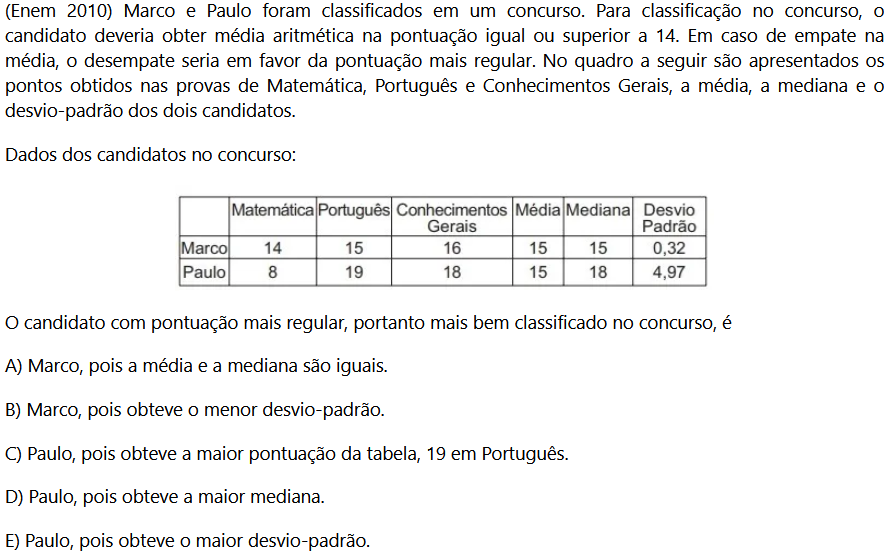

Medida de dispersão é uma forma de medir o quanto um dado foge da média. Esse assunto é muito importante para o ENEM, porém normalmente é cobrado por meio de lógica e não por contas.
Amplitude total
É a medida mais simples de todas, basta subtrair o maior dado do menor dado.
Desvio médio
É como se fosse uma amplitude total, mas subtrai-se o dado (xi) da média (M) e divide-se pelo numero de dados (n). É como uma combinação de amplitude total com media aritmética simples, veja:
Variância
Variância é a média dos quadrados dos desvios médios, ou seja, é a mesma fórmula dos desvios médios mas ao quadrado. Então pode ser escrita assim:
Normalmente, não utilizamos a resposta da questão como a variância, pois ela apresenta uma unidade de medida ao quadrado, por exemplo, se os dados estiverem em metros, a variância estará em metros quadrados. Para resolver isso, tiramos a raiz quadrada da variância, obtendo o desvio padrão.
Desvio Padrão
É simplesmente a raiz quadrada da variância.
Agora a unidade de medida não está mais ao quadrado, o que significa que podemos utilizá-la para comparar os desvios dos dados.
Coeficiente de Variação
O coeficiente de variação surge como uma forma de transformar o desvio padrão em uma porcentagem, para que possamos comparar os desvios de dados que possuem unidades de medida diferentes. Podemos calcular o coeficiente de variação dividindo o desvio padrão pela média, assim:
Exercícios de Exemplo
Questão 1
Nesta questão basta analizarmos os dados fornecidos pela tabela e pelo enunciado. O critério de desempate é o quão homogêneo as notas foram, logo a mediana não é um critério de desempate, por isso podemos eliminar a alternativas A e D. Similar a isso, a nota em portugues não é um critério de desempate, então podemos eliminar a alternativa C. Sobraram as alternativas B e E, analisando os dados, vemos que a nota mais homogênea é a de Marcos, pois ela é quase 0. Logo a alternativa correta é a letra B.
Questão 2
Se a variância X é 0,81, logo o desvio-padrão de X é a raiz quadrada de 0,81. Logo, √0,81 = 0,9
Parecido com isso a variância Y é 0,64 e o desvio padrão será √0,64, que é 0,8.
Com essas informações, podemos eliminar as alternativas A, D e E. Na alternativa C, temos: 0,9 - 0,8, pois a
alternativa fala da diferença do desvio padrão e não da variancia, caso fosse a diferença da variância, aí
sim essa alternativa estaria correta.
Nesse caso, só nos falta a alternativa B, que é a correta.
Questão 3
Calcule: desvio médio, variância, desvio padrão e coeficiente de variação dos dados apresentados na tabela.
Fonte: Adaptado do material da professora Valéria Espindola Lessa.
Classes médias:
Calculo da Média:
Desvio médio aplicando a fórmula:
Variância:
Desvio Padrão:
Coeficiente de Variação:
>>Proximo Conteúdo
>>Página de Conteúdos